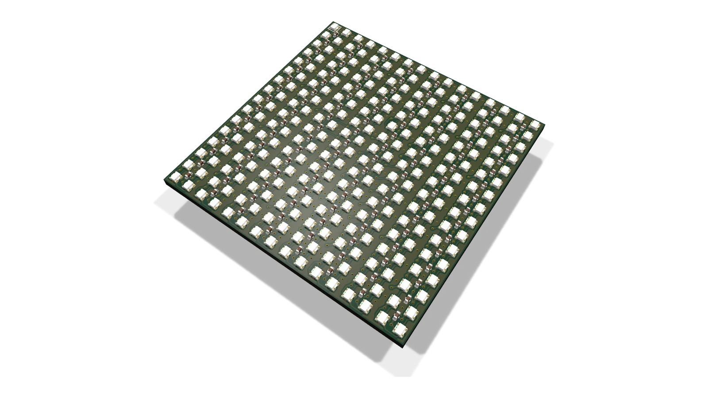
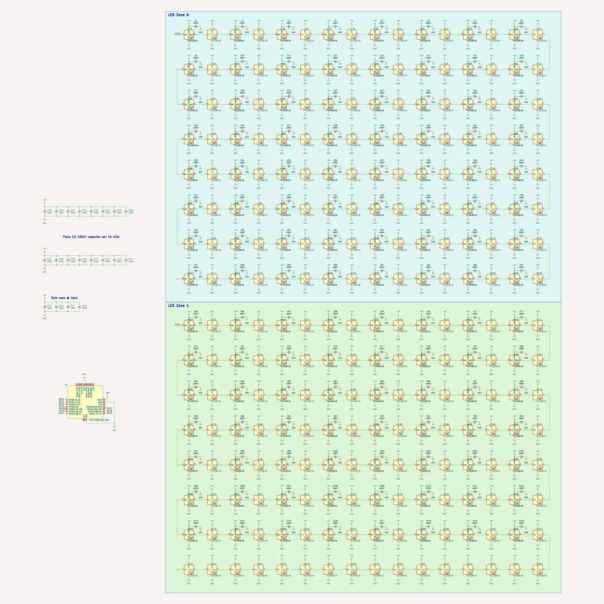

Portfolio / Personal projects
RGB LED matrix
A self-contained addressable RGB LED panel. Unlike HUB75 panels, which need an external controller constantly scanning rows, the controller lives on the board: plug in USB-C and it runs.
Last updated

v0 was a prototype: the boards arrived, and it runs. v1, a bigger and more capable panel, is in the works.
v0 hardware
- 256 LEDs in a 16×16 grid at 3 mm pitch: XL-1615RGBC-2812B-S, 1.6 × 1.5 mm and WS2812B-compatible.
- Seeed XIAO ESP32-C6 on the back, hand-soldered.
- Two data chains of 128 LEDs on two GPIOs, driven by the ESP32's RMT peripheral. That's about 250 fps: 128 × 24 bits at 800 kbps, plus a 200 µs reset.
- 5 V over USB-C, with 3.3 V logic from the onboard regulator.
- 4 layers, with full 5 V and ground planes. The board's layers are what the exploded view on my PCB design page is built from.
v0 power budget
Each LED is set to 5 mA per channel, so full white across the panel would draw about 3.84 A. That's more than USB-C's 5 V/3 A budget, so brightness is capped in firmware rather than in hardware. The firmware estimates each frame's draw and scales it down only when that frame would go over:
I_leds = (sum of all 768 channel bytes / 255) × 5 mA + 90 mA staticThe static term is real: each LED IC draws about 0.35 mA even with every channel off.

What v0 was for
v0 was never meant to be a product. It was a prototype, built to answer questions like:
- How bright is 5 mA per channel in practice, with and without a diffuser?
- Does 3 mm pitch read well at desk distance?
- Does the per-frame current estimator hold up without visible brightness pumping?
- Is hand-soldering the XIAO annoying enough to design around?
- Is two chains the right split, or would one (or four) make more sense?
It was also descoped from an earlier modular design, with seamless magnetic tiles and one controller per tile, to make it finishable. That idea is shelved, not abandoned.
v1, in progress
With v0 running, v1 takes the panel from test board to something you'd want on a desk or a wall:
- 32×32 LEDs (1,024 of them) at a 4.0 mm pitch.
- USB Power Delivery at 20 V, with its own power circuitry on the board, instead of being capped by USB-C's 5 V budget.
- An accelerometer and gyroscope, for animations that react to tilting and shaking the panel.
- Still a single, integrated panel: the controller stays on the board.